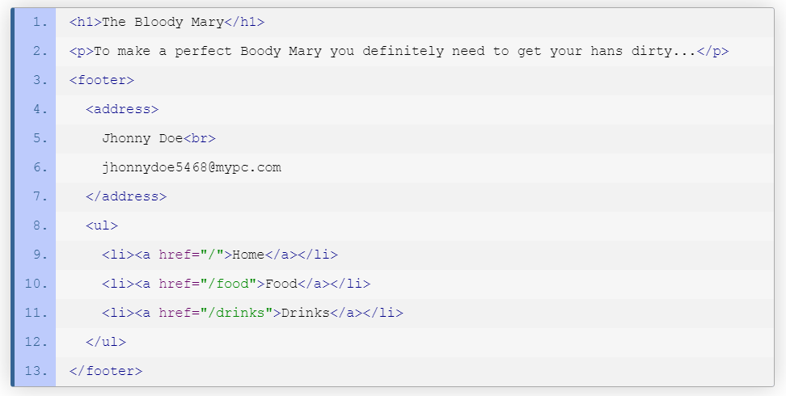

footer
El elemento de html FOOTER
El Elemento HTML Footer FOOTER representa un pie de página para el contenido de sección más cercano o el elemento raíz de sección (p.e, su ancestro mas cercano ARTICLE, ASIDE, NAV, SECTION,BLOKCOUTE, BODY, DETAILs, FIELDSET, FIGURE, TD. Un pie de página típicamente contiene información acerca de el autor de la sección, datos de derechos de autor o enlaces a documentos relacionados.
Notas de uso:
Encierra la información acerca del autor en un elemento ADDRESS que puede ser incluido dentro del elemento FOOTER.
El elemento FOOTER no es contenido de sección y en consecuencia no introduce una nueva sección en el esquema.
https://developer.mozilla.org/es/docs/Web/HTML/Elemento/footer#:~:text=El%20Elemento%20HTML%20Footer%20(%3Cfooter,%3E%20%2C%20).
ejemplo

https://www.htmlquick.com/es/reference/tags/footer.html